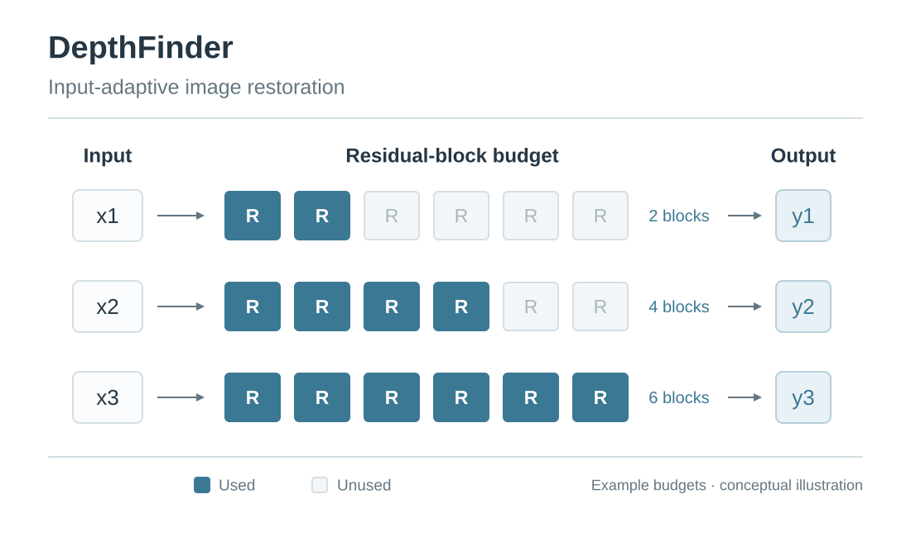

I study controllable image and video generation, with a focus on geometric consistency and physical plausibility. My research connects reward-guided synthesis, 3D geometric priors, and efficient model adaptation.
Previously, I worked at Samsung AI Center and NAVER AI Lab. I received my M.S. from Seoul National University, advised by Bohyung Han, and worked with Dongyoon Han and Sangdoo Yun at NAVER.
RewardFlow is a zero-shot, training-free framework for text-guided image editing and generation using reward-guided Langevin dynamics. We steer pretrained diffusion and flow-matching models at inference with hierarchically designed coarse-to-fine differentiable rewards (e.g., a VQA-based reward for semantic supervision and a SAM-guided reward for localized edits), controlled by a prompt-aware adaptive policy.
PyraTok: Language-Aligned Pyramidal Tokenizer for Video Understanding and Generation
Onkar Kishor Susladkar, Tushar Prakash, Adheesh Sunil Juvekar, Kiet A. Nguyen, Dong-Hwan Jang, Inderjit S. Dhillon, Ismini Lourentzou CVPR, 2026
PyraTok is a language-aligned pyramidal tokenizer for video understanding and generation that learns discrete latents across multiple spatial-temporal resolutions. We introduce Language-aligned Pyramidal Quantization (LaPQ), discretizing encoder features at several depths with a shared large binary codebook. PyraTok achieves state-of-the-art video reconstruction, text-to-video quality, and zero-shot performance on segmentation, action localization, and understanding, scaling to 4K/8K resolutions.
Our analysis reveals that fine-tuned weights reside on a thin shell in the weight space, maintaining nearly constant layer-wise angles and norms. By leveraging the geometric link between center proximity and performance, we propose an efficient merging method that approximates the weight center with only two models—achieving superior ID/OOD performance at 24x less cost than Model Soup.
We introduce Merge-and-Bound (M&B), an innovative approach for Class Incremental Learning that optimizes model weights through two merging techniques: inter-task and intra-task weight merging, alongside a bounded update to prevent catastrophic forgetting. Without altering architectures or objectives, M&B integrates into existing methods, showing superior performance on CIL benchmarks against top competitors.
Dong-Hwan Jang, Sanghyeok Chu, Joonhyuk Kim, Bohyung Han CVPR, 2022
We propose DynOPool, a learnable pooling layer that finds the optimal scale factors and receptive fields of intermediate feature maps. While fixed pooling operators often result in suboptimal receptive fields by ignoring dataset-specific characteristics, DynOPool enables data-driven resolution scaling, achieving up to a 5.6%p accuracy gain on fine-grained recognition (FGVC-Aircraft) and approximately 33% fewer MACs on ImageNet with comparable accuracy. It adapts feature map sizes and shapes for enhanced accuracy and efficiency in tasks like image classification and semantic segmentation.
We present DS4C South Korea Patient, Policy, and Provincial data (DS4C-PPP dataset). The dataset contains comprehensive data that could be used for causal analysis, such as per-patient symptom onset and confirmed date, travel frequency, hospital accessibility, and 61 preventative policies enacted in South Korea.
Background
Education
Ph.D. Student, Computer ScienceUniversity of Illinois Urbana-Champaign (UIUC)Aug 2025 – PresentAdvisor: Ismini Lourentzou
Visiting ScholarCarnegie Mellon UniversitySep 2022 – Feb 2023Full-time, Pittsburgh, PA · AI project, fully funded by the Korean Government
Master's Student, ECE (Computer Vision)Seoul National UniversitySep 2020 – Aug 2023Research advised by Prof. Bohyung Han
Bachelor's Degree, ECE / MOTSeoul National University2013 – 2020Summa Cum Laude, ranked 1st in class
Research & industry experience
University of Illinois Urbana-Champaign
Research Assistant · Summer 2026–Present
Implementation and evaluation of LLM research agents for quantitative ML-claim verification.
Samsung AI Center
Research Engineer · Jan 2024–Aug 2025
Robust model adaptation and wafer-inspection anomaly detection; model packaging and integration handoff.
NAVER AI Cloud
Research Intern · Jul–Dec 2023
Model Stock: efficient, geometry-based model merging.
Mind’s Lab
Research Scientist · Feb–Sep 2019
Weakly supervised segmentation and spatially adaptive colorization.
TNC Technology
Software Engineer · Oct 2016–Feb 2019
Java payment gateway development for KOCES.
Earlier projects
DIFF: Deblurring Implicit Feature Function
We propose spatially-variant motion deblur network based on the implicit neural representation. A spatially-variant deblurring network takes deformed features and their offsets as inputs.
U.S. Patent Application Number: 17/973,809 (in progress)
Dynamic Spatially-Adaptive Modulation for image Dehazing
We propose a novel framework of the dynamic spatially-adaptive modulation for image dehazing. The proposed algorithm introduces a selection module that conditionally determine the necessary modulation pathways in a bottom-up manner by providing a loss function optimizing both accuracy and efficiency.

DepthFinder: Universal Image Restoration based on Adaptive Inference
We adaptively find the appropriate number of the residual blocks according to the severity and distortion type of the input in universal image restoration task.
Scholarships & awards
Kwanjeong Educational Foundation Study Abroad Scholarship (2025–2029)
Provides USD 25,000 per year to support Ph.D. study, awarded to outstanding Korean students pursuing advanced research overseas.
Korean Government Scholarship for Overseas Study (2023–2024)
Covers USD 40,000 support per year. Only 64 students are selected in all fields in Korea.
Hyundai OnDream Global Scholarship Award (2022)
Award Prize – around USD 2,350 for the paper "Pooling Revisited: Your Receptive Field is Suboptimal" at CVPR 2022.
Korean Conference on Computer Vision 2022Invited oral on "Pooling Revisited: Your Receptive Field is Suboptimal," presented by Prof. Bohyung Han on my behalf; poster presented personally.
Databricks Invited Talk1 hour talk on "The Complexities around COVID-19 Data" invited as DS4C team
Teaching Assistant, Seoul National University: Introduction to Algorithms (Fall 2020); Samsung AI Expert Course (July 2019); Hyundai Motors AI Expert Course (January 2019).